- 00 开篇词：JVM，一块难啃的骨头.md.html
- 01 一探究竟：为什么需要 JVM？它处在什么位置？.md.html
- 02 大厂面试题：你不得不掌握的 JVM 内存管理.md.html
- 03 大厂面试题：从覆盖 JDK 的类开始掌握类的加载机制.md.html
- 04 动手实践：从栈帧看字节码是如何在 JVM 中进行流转的.md.html
- 05 大厂面试题：得心应手应对 OOM 的疑难杂症.md.html
- 06 深入剖析：垃圾回收你真的了解吗？（上）.md.html
- 07 深入剖析：垃圾回收你真的了解吗？（下）.md.html
- 08 大厂面试题：有了 G1 还需要其他垃圾回收器吗？.md.html
- 09 案例实战：亿级流量高并发下如何进行估算和调优.md.html
- 10 第09讲：案例实战：面对突如其来的 GC 问题如何下手解决.md.html
- 11 第10讲：动手实践：自己模拟 JVM 内存溢出场景.md.html
- 12 第11讲：动手实践：遇到问题不要慌，轻松搞定内存泄漏.md.html
- 13 工具进阶：如何利用 MAT 找到问题发生的根本原因.md.html
- 14 动手实践：让面试官刮目相看的堆外内存排查.md.html
- 15 预警与解决：深入浅出 GC 监控与调优.md.html
- 16 案例分析：一个高死亡率的报表系统的优化之路.md.html
- 17 案例分析：分库分表后，我的应用崩溃了.md.html
- 18 动手实践：从字节码看方法调用的底层实现.md.html
- 19 大厂面试题：不要搞混 JMM 与 JVM.md.html
- 20 动手实践：从字节码看并发编程的底层实现.md.html
- 21 动手实践：不为人熟知的字节码指令.md.html
- 22 深入剖析：如何使用 Java Agent 技术对字节码进行修改.md.html
- 23 动手实践：JIT 参数配置如何影响程序运行？.md.html
- 24 案例分析：大型项目如何进行性能瓶颈调优？.md.html
- 25 未来：JVM 的历史与展望.md.html
- 26 福利：常见 JVM 面试题补充.md.html
16 案例分析：一个高死亡率的报表系统的优化之路
本课时我们主要分析一个案例，那就是一个“高死亡率”报表系统的优化之路。
传统观念上的报表系统，可能访问量不是特别多，点击一个查询按钮，后台 SQL 语句的执行需要等数秒。如果使用 jstack 来查看执行线程，会发现大多数线程都阻塞在数据库的 I/O 上。
上面这种是非常传统的报表。还有一种类似于大屏监控一类的实时报表，这种报表的并发量也是比较可观的，但由于它的结果集都比较小，所以我们可以像对待一个高并发系统一样对待它，问题不是很大。
本课时要讲的，就是传统观念上的报表。除了处理时间比较长以外，报表系统每次处理的结果集，普遍都比较大，这给 JVM 造成了非常大的压力。
下面我们以一个综合性的实例，来看一下一个“病入膏肓”的报表系统的优化操作。
有一个报表系统，频繁发生内存溢出，在高峰期间使用时，还会频繁的发生拒绝服务，这是不可忍受的。
服务背景
本次要优化的服务是一个 SaaS 服务，使用 Spring Boot 编写，采用的是 CMS 垃圾回收器。如下图所示，有些接口会从 MySQL 中获取数据，有些则从 MongoDB 中获取数据，涉及的结果集合都比较大。
由于有些结果集的字段不是太全，因此需要对结果集合进行循环，可通过 HttpClient 调用其他服务的接口进行数据填充。也许你会认为某些数据可能会被复用，于是使用 Guava 做了 JVM 内缓存。
大体的服务依赖可以抽象成下面的图。
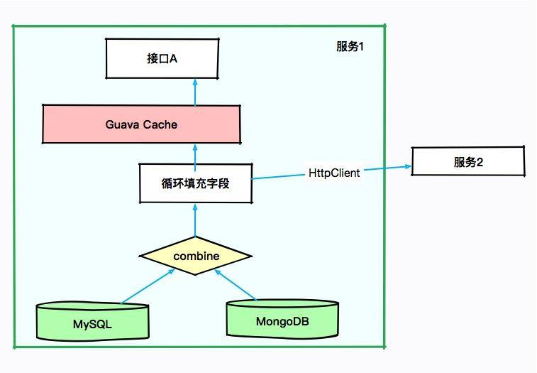
初步排查，JVM 的资源太少。当接口 A 每次进行报表计算时，都要涉及几百兆的内存，而且在内存里驻留很长时间，同时有些计算非常耗 CPU，特别的“吃”资源。而我们分配给 JVM 的内存只有 3 GB，在多人访问这些接口的时候，内存就不够用了，进而发生了 OOM。在这种情况下，即使连最简单的报表都不能用了。
没办法，只有升级机器。把机器配置升级到 4core8g，给 JVM 分配 6GB 的内存，这样 OOM 问题就消失了。但随之而来的是频繁的 GC 问题和超长的 GC 时间，平均 GC 时间竟然有 5 秒多。
初步优化
我们前面算过，6GB 大小的内存，年轻代大约是 2GB，在高峰期，每几秒钟则需要进行一次 MinorGC。报表系统和高并发系统不太一样，它的对象，存活时长大得多，并不能仅仅通过增加年轻代来解决；而且，如果增加了年轻代，那么必然减少了老年代的大小，由于 CMS 的碎片和浮动垃圾问题，我们可用的空间就更少了。虽然服务能够满足目前的需求，但还有一些不太确定的风险。
第一，了解到程序中有很多缓存数据和静态统计数据，为了减少 MinorGC 的次数，通过分析 GC 日志打印的对象年龄分布，把 MaxTenuringThreshold 参数调整到了 3（请根据你自己的应用情况设置）。这个参数是让年轻代的这些对象，赶紧回到老年代去，不要老呆在年轻代里。
第二，我们的 GC 时间比较长，就一块开了参数 CMSScavengeBeforeRemark，使得在 CMS remark 前，先执行一次 Minor GC 将新生代清掉。同时配合上个参数，其效果还是比较好的，一方面，对象很快晋升到了老年代，另一方面，年轻代的对象在这种情况下是有限的，在整个 MajorGC 中占的时间也有限。
第三，由于缓存的使用，有大量的弱引用，拿一次长达 10 秒的 GC 来说。我们发现在 GC 日志里，处理 weak refs 的时间较长，达到了 4.5 秒。
2020-01-28T12:13:32.876+0800: 526569.947: [weak refs processing, 4.5240649 secs]
所以加入了参数 ParallelRefProcEnabled 来并行处理 Reference，以加快处理速度，缩短耗时。
同时还加入了其他一些优化参数，比如通过调整触发 GC 的参数来进行优化。
-Xmx6g -Xms6g -XX:MaxTenuringThreshold=3 -XX:+AlwaysPreTouch -XX:+Par
allelRefProcEnabled -XX:+CMSScavengeBeforeRemark -XX:+UseConcMarkSwe
epGC -XX:CMSInitiatingOccupancyFraction=80 -XX:+UseCMSInitiatingOccu
pancyOnly -XX:MetaspaceSize=256M -XX:MaxMetaspaceSize=256M
优化之后，效果不错，但并不是特别明显。经过评估，针对高峰时期的情况进行调研，我们决定再次提升机器性能，改用 8core16g 的机器。但是，这会带来另外一个问题。
高性能的机器带来了非常大的服务吞吐量，通过 jstat 进行监控，能够看到年轻代的分配速率明显提高，但随之而来的 MinorGC 时长却变的不可控，有时候会超过 1 秒。累积的请求造成了更加严重的后果。
这是由于堆空间明显加大造成的回收时间加长。为了获取较小的停顿时间，我们在堆上采用了 G1 垃圾回收器，把它的目标设定在 200ms。G1 是一款非常优秀的垃圾收集器，不仅适合堆内存大的应用，同时也简化了调优的工作。通过主要的参数初始和最大堆空间、以及最大容忍的 GC 暂停目标，就能得到不错的性能。所以为了照顾大对象的生成，我们把小堆区的大小修改为 16 M。修改之后，虽然 GC 更加频繁了一些，但是停顿时间都比较小，应用的运行较为平滑。
-Xmx12g -Xms12g -XX:+UseG1GC -XX:InitiatingHeapOccupancyPercent=45 -XX:MaxGCPauseMillis=200 -XX:G1HeapRegionSize=16m -XX:MetaspaceSize=256m -XX:MaxMetaspaceSize=256m
这个时候，任务来了：业务部门发力，预计客户增长量增长 10 ~ 100 倍，报表系统需要评估其可行性，以便进行资源协调。可问题是，这个“千疮百孔”的报表系统，稍微一压测，就宕机，那如何应对十倍百倍的压力呢？
使用 MAT 分析堆快照，发现很多地方可以通过代码优化，那些占用内存特别多的对象，都是我们需要优化的。
代码优化
我们使用扩容硬件的方式，暂时缓解了 JVM 的问题，但是根本问题并没有触及到。为了减少内存的占用，肯定要清理无用的信息。通过对代码的仔细分析，首先要改造的就是 SQL 查询语句。
很多接口，其实并不需要把数据库的每个字段都查询出来，当你在计算和解析的时候，它们会不知不觉地“吃掉”你的内存。所以我们只需要获取所需的数据就够了，也就是把 select * 这种方式修改为具体的查询字段，对于报表系统来说这种优化尤其明显。
再一个就是 Cache 问题，通过排查代码，会发现一些命中率特别低，占用内存又特别大的对象，放到了 JVM 内的 Cache 中，造成了无用的浪费。
解决方式，就是把 Guava 的 Cache 引用级别改成弱引用（WeakKeys），尽量去掉无用的应用缓存。对于某些使用特别频繁的小 key，使用分布式的 Redis 进行改造即可。
为了找到更多影响因子大的问题，我们部署了独立的环境，然后部署了 JVM 监控。在回放某个问题请求后，观察 JVM 的响应，通过这种方式，发现了更多的优化可能。
报表系统使用了 POI 组件进行导入导出功能的开发，结果客户在没有限制的情况下上传、下载了条数非常多的文件，直接让堆内存飙升。为了解决这种情况，我们在导入功能加入了文件大小的限制，强制客户进行拆分；在下载的时候指定范围，严禁跨度非常大的请求。
在完成代码改造之后，再把机器配置降级回 4core8g，依然采用 G1 垃圾回收器，再也没有发生 OOM 的问题了，GC 问题也得到了明显的缓解。
拒绝服务问题
上面解决的是 JVM 的内存问题，可以看到除了优化 JVM 参数、升级机器配置以外，代码修改带来的优化效果更加明显，但这个报表服务还有一个严重的问题。
刚开始我们提到过，由于没有微服务体系，有些数据需要使用 HttpClient 来获取进行补全。提供数据的服务有的响应时间可能会很长，也有可能会造成服务整体的阻塞。
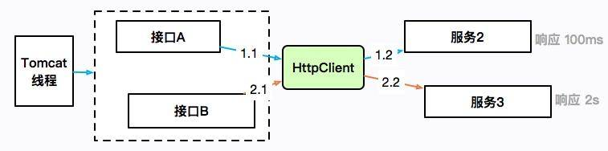
如上图所示，接口 A 通过 HttpClient 访问服务 2，响应 100ms 后返回；接口 B 访问服务 3，耗时 2 秒。HttpClient 本身是有一个最大连接数限制的，如果服务 3 迟迟不返回，就会造成 HttpClient 的连接数达到上限，最上层的 Tomcat 线程也会一直阻塞在这里，进而连响应速度比较快的接口 A 也无法正常提供服务。
这是出现频率非常高的的一类故障，在工作中你会大概率遇见。概括来讲，就是同一服务，由于一个耗时非常长的接口，进而引起了整体的服务不可用。
这个时候，通过 jstack 打印栈信息，会发现大多数竟然阻塞在了接口 A 上，而不是耗时更长的接口 B。这是一种错觉，其实是因为接口 A 的速度比较快，在问题发生点进入了更多的请求，它们全部都阻塞住了。
证据本身具有非常强的迷惑性。由于这种问题发生的频率很高，排查起来又比较困难，我这里专门做了一个小工程，用于还原解决这种问题的一个方式，参见 report-demo 工程。
demo 模拟了两个使用同一个 HttpClient 的接口。如下图所示，fast 接口用来访问百度，很快就能返回；slow 接口访问谷歌，由于众所周知的原因，会阻塞直到超时，大约 10 s。
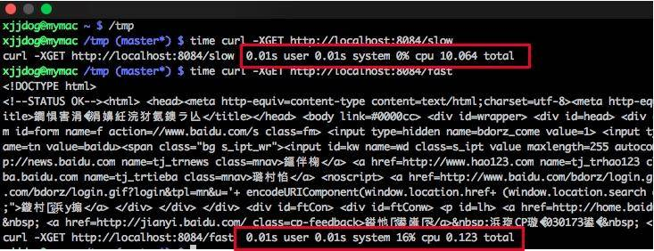
使用 wrk 工具对这两个接口发起压测。
wrk -t10 -c200 -d300s http://127.0.0.1:8084/slow
wrk -t10 -c200 -d300s http://127.0.0.1:8084/fast
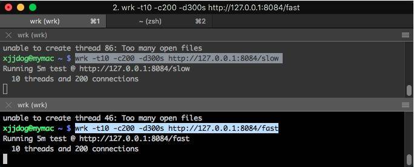
此时访问一个简单的接口，耗时竟然能够达到 20 秒。
time curl http://localhost:8084/stat
fast648,slow:1curl http://localhost:8084/stat 0.01s user 0.01s system 0% cpu 20.937 total
使用 jstack 工具 dump 堆栈。首先使用 jps 命令找到进程号，然后把结果重定向到文件（可以参考 10271.jstack 文件）。
过滤一下 nio 关键字，可以查看 tomcat 相关的线程，足足有 200 个，这和 Spring Boot 默认的 maxThreads 个数不谋而合。更要命的是，有大多数线程，都处于 BLOCKED 状态，说明线程等待资源超时。
cat 10271.jstack |grep http-nio-80 -A 3
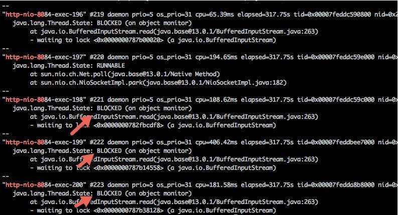
使用脚本分析，发现有大量的线程阻塞在 fast 方法上。我们上面也说过，这是一个假象，可能你到了这一步，会心生存疑，以至于无法再向下分析。
$ cat 10271.jstack |grep fast | wc -l
137
$ cat 10271.jstack |grep slow | wc -l
63
分析栈信息，你可能会直接查找 locked 关键字，如下图所示，但是这样的方法一般没什么用，我们需要做更多的统计。
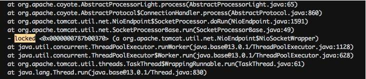
注意下图中有一个处于 BLOCKED 状态的线程，它阻塞在对锁的获取上（wating to lock）。大体浏览一下 DUMP 文件，会发现多处这种状态的线程，可以使用如下脚本进行统计。
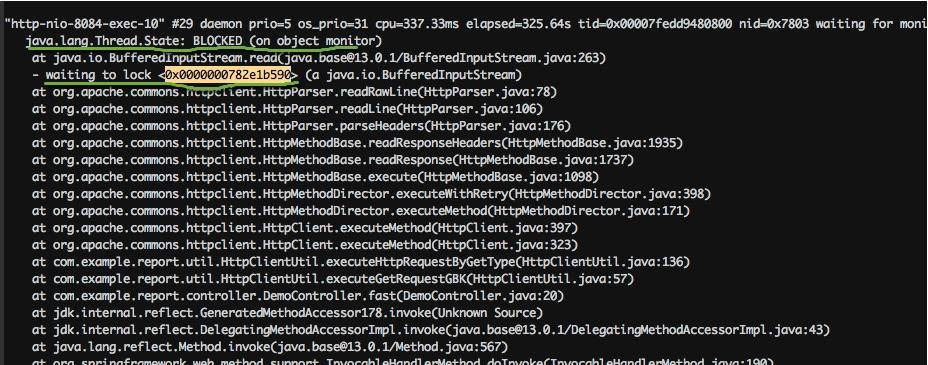
cat 10271.tdump| grep "waiting to lock " | awk '{print $5}' | sort | uniq -c | sort -k1 -r
26 <0x0000000782e1b590>
18 <0x0000000787b00448>
16 <0x0000000787b38128>
10 <0x0000000787b14558>
8 <0x0000000787b25060>
4 <0x0000000787b2da18>
4 <0x0000000787b00020>
2 <0x0000000787b6e8e8>
2 <0x0000000787b03328>
2 <0x0000000782e8a660>
1 <0x0000000787b6ab18>
1 <0x0000000787b2ae00>
1 <0x0000000787b0d6c0>
1 <0x0000000787b073b8>
1 <0x0000000782fbcdf8>
1 <0x0000000782e11200>
1 <0x0000000782dfdae0>
我们找到给 0x0000000782e1b590 上锁的执行栈，可以发现全部卡在了 HttpClient 的读操作上。在实际场景中，可以看下排行比较靠前的几个锁地址，找一下共性。
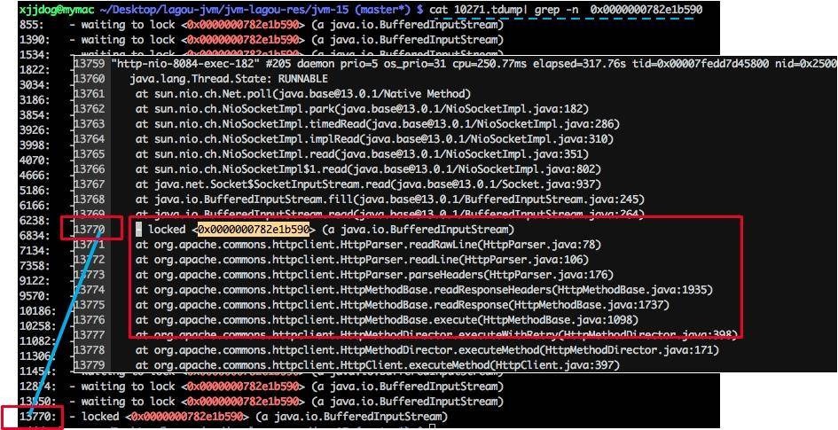
返回头去再看一下代码。我们发现 HttpClient 是共用了一个连接池，当连接数超过 100 的时候，就会阻塞等待。它的连接超时时间是 10 秒，这和 slow 接口的耗时不相上下。
private final static HttpConnectionManager httpConnectionManager = new SimpleHttpConnectionManager(true);
static {
HttpConnectionManagerParams params = new HttpConnectionManagerParams();
params.setMaxTotalConnections(100);
params.setConnectionTimeout(1000 * 10);
params.setSoTimeout(defaultTimeout);
httpConnectionManager.setParams(params);
slow 接口和 fast 接口同时在争抢这些连接，让它时刻处在饱满的状态，进而让 tomcat 的线程等待、占满，造成服务不可用。
问题找到了，解决方式就简单多了。我们希望 slow 接口在阻塞的时候，并不影响 fast 接口的运行。这就可以对某一类接口进行限流，或者对不重要的接口进行熔断处理，这里不再深入讲解（具体可参考 Spring Boot 的限流熔断处理）。
现实情况是，对于一个运行的系统，我们并不知道是 slow 接口慢还是 fast 接口慢，这就需要加入一些额外的日志信息进行排查。当然，如果有一个监控系统能够看到这些数据是再好不过了。
项目中的 HttpClientUtil2 文件，是改造后的一个版本。除了调大了连接数，它还使用了多线程版本的连接管理器（MultiThreadedHttpConnectionManager），这个管理器根据请求的 host 进行划分，每个 host 的最大连接数不超过 20。还提供了 getConnectionsInPool 函数，用于查看当前连接池的统计信息。采用这些辅助的手段，可以快速找到问题服务，这是典型的情况。由于其他应用的服务水平低而引起的连锁反应，一般的做法是熔断、限流等，在此不多做介绍了。
jstack 产生的信息
为了观测一些状态，我上传了几个 Java 类，你可以实际运行一下，然后使用 jstack 来看一下它的状态。
waiting on condition
示例参见 SleepDemo.java。
public class SleepDemo {
public static void main(String[] args) {
new Thread(()->{
try {
Thread.sleep(Integer.MAX_VALUE);
} catch (InterruptedException e) {
e.printStackTrace();
}
},"sleep-demo").start();
}
}
这个状态出现在线程等待某个条件的发生，来把自己唤醒，或者调用了 sleep 函数，常见的情况就是等待网络读写，或者等待数据 I/O。如果发现大多数线程都处于这种状态，证明后面的资源遇到了瓶颈。
此时线程状态大致分为以下两种：
- java.lang.Thread.State: WAITING (parking)：一直等待条件发生；
- java.lang.Thread.State: TIMED_WAITING (parking 或 sleeping)：定时的，即使条件不触发，也将定时唤醒。
"sleep-demo" #12 prio=5 os_prio=31 cpu=0.23ms elapsed=87.49s tid=0x00007fc7a7965000 nid=0x6003 waiting on condition [0x000070000756d000]
java.lang.Thread.State: TIMED_WAITING (sleeping)
at java.lang.Thread.sleep([email protected]/Native Method)
at SleepDemo.lambda$main$0(SleepDemo.java:5)
at SleepDemo$$Lambda$16/0x0000000800b45040.run(Unknown Source)
at java.lang.Thread.run([email protected]/Thread.java:830)
值的注意的是，Java 中的可重入锁，也会让线程进入这种状态，但通常带有 parking 字样，parking 指线程处于挂起中，要注意区别。代码可参见 LockDemo.java：
import java.util.concurrent.locks.Lock;
import java.util.concurrent.locks.ReentrantLock;
public class LockDemo {
public static void main(String[] args) {
Lock lock = new ReentrantLock();
lock.lock();
new Thread(() -> {
try {
lock.lock();
} finally {
lock.unlock();
}
}, "lock-demo").start();
}
堆栈代码如下：
"lock-demo" #12 prio=5 os_prio=31 cpu=0.78ms elapsed=14.62s tid=0x00007ffc0b949000 nid=0x9f03 waiting on condition [0x0000700005826000]
java.lang.Thread.State: WAITING (parking)
at jdk.internal.misc.Unsafe.park([email protected]/Native Method)
- parking to wait for <0x0000000787cf0dd8> (a java.util.concurrent.locks.ReentrantLock$NonfairSync)
at java.util.concurrent.locks.LockSupport.park([email protected]/LockSupport.java:194)
at java.util.concurrent.locks.AbstractQueuedSynchronizer.parkAndCheckInterrupt([email protected]/AbstractQueuedSynchronizer.java:885)
at java.util.concurrent.locks.AbstractQueuedSynchronizer.acquireQueued([email protected]/AbstractQueuedSynchronizer.java:917)
at java.util.concurrent.locks.AbstractQueuedSynchronizer.acquire([email protected]/AbstractQueuedSynchronizer.java:1240)
at java.util.concurrent.locks.ReentrantLock.lock([email protected]/ReentrantLock.java:267)
at LockDemo.lambda$main$0(LockDemo.java:11)
at LockDemo$$Lambda$14/0x0000000800b44840.run(Unknown Source)
at java.lang.Thread.run([email protected]/Thread.java:830)
waiting for monitor entry
我们上面提到的 HttpClient 例子，就是大部分处于这种状态，线程都是 BLOCKED 的。这意味着它们都在等待进入一个临界区，需要重点关注。
"http-nio-8084-exec-120" #143 daemon prio=5 os_prio=31 cpu=122.86ms elapsed=317.88s tid=0x00007fedd8381000 nid=0x1af03 waiting for monitor entry [0x00007000150e1000]
java.lang.Thread.State: BLOCKED (on object monitor)
at java.io.BufferedInputStream.read([email protected]/BufferedInputStream.java:263)
- waiting to lock <0x0000000782e1b590> (a java.io.BufferedInputStream)
at org.apache.commons.httpclient.HttpParser.readRawLine(HttpParser.java:78)
at org.apache.commons.httpclient.HttpParser.readLine(HttpParser.java:106)
at org.apache.commons.httpclient.HttpConnection.readLine(HttpConnection.java:1116)
at org.apache.commons.httpclient.HttpMethodBase.readStatusLine(HttpMethodBase.java:1973)
at org.apache.commons.httpclient.HttpMethodBase.readResponse(HttpMethodBase.java:1735)
in Object.wait()
示例代码参见 WaitDemo.java：
public class WaitDemo {
public static void main(String[] args) throws Exception {
Object o = new Object();
new Thread(() -> {
try {
synchronized (o) {
o.wait();
}
} catch (InterruptedException e) {
e.printStackTrace();
}
}, "wait-demo").start();
Thread.sleep(1000);
synchronized (o) {
o.wait();
}
}
说明在获得了监视器之后，又调用了 java.lang.Object.wait() 方法。
关于这部分的原理，可以参见一张经典的图。每个监视器（Monitor）在某个时刻，只能被一个线程拥有，该线程就是“Active Thread”，而其他线程都是“Waiting Thread”，分别在两个队列“Entry Set”和“Wait Set”里面等候。在“Entry Set”中等待的线程状态是“Waiting for monitor entry”，而在“Wait Set”中等待的线程状态是“in Object.wait()”。
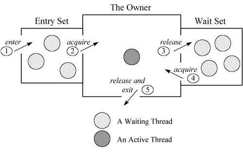
"wait-demo" #12 prio=5 os_prio=31 cpu=0.14ms elapsed=12.58s tid=0x00007fb66609e000 nid=0x6103 in Object.wait() [0x000070000f2bd000]
java.lang.Thread.State: WAITING (on object monitor)
at java.lang.Object.wait([email protected]/Native Method)
- waiting on <0x0000000787b48300> (a java.lang.Object)
at java.lang.Object.wait([email protected]/Object.java:326)
at WaitDemo.lambda$main$0(WaitDemo.java:7)
- locked <0x0000000787b48300> (a java.lang.Object)
at WaitDemo$$Lambda$14/0x0000000800b44840.run(Unknown Source)
at java.lang.Thread.run([email protected]/Thread.java:830)
死锁
代码参见 DeadLock.java：
public class DeadLockDemo {
public static void main(String[] args) {
Object object1 = new Object();
Object object2 = new Object();
Thread t1 = new Thread(() -> {
synchronized (object1) {
try {
Thread.sleep(200);
} catch (InterruptedException e) {
e.printStackTrace();
}
synchronized (object2) {
}
}
}, "deadlock-demo-1");
t1.start();
Thread t2 = new Thread(() -> {
synchronized (object2) {
synchronized (object1) {
}
}
}, "deadlock-demo-2");
t2.start();
}
}
死锁属于比较严重的一种情况，jstack 会以明显的信息进行提示。
Found one Java-level deadlock:
=============================
"deadlock-demo-1":
waiting to lock monitor 0x00007fe5e406f500 (object 0x0000000787cecd78, a java.lang.Object),
which is held by "deadlock-demo-2"
"deadlock-demo-2":
waiting to lock monitor 0x00007fe5e406d500 (object 0x0000000787cecd68, a java.lang.Object),
which is held by "deadlock-demo-1"
Java stack information for the threads listed above:
===================================================
"deadlock-demo-1":
at DeadLockDemo.lambda$main$0(DeadLockDemo.java:13)
- waiting to lock <0x0000000787cecd78> (a java.lang.Object)
- locked <0x0000000787cecd68> (a java.lang.Object)
at DeadLockDemo$$Lambda$14/0x0000000800b44c40.run(Unknown Source)
at java.lang.Thread.run([email protected].1/Thread.java:830)
"deadlock-demo-2":
at DeadLockDemo.lambda$main$1(DeadLockDemo.java:21)
- waiting to lock <0x0000000787cecd68> (a java.lang.Object)
- locked <0x0000000787cecd78> (a java.lang.Object)
at DeadLockDemo$$Lambda$16/0x0000000800b45040.run(Unknown Source)
at java.lang.Thread.run([email protected]/Thread.java:830)
Found 1 deadlock
当然，关于线程的 dump，也有一些线上分析工具可以使用。下图是 fastthread 的一个分析结果，但也需要你先了解这些情况发生的意义。
![本课时我们主要分析一个案例，那就是分库分表后，我的应用崩溃了。
前面介绍了一种由于数据库查询语句拼接问题，而引起的一类内存溢出。下面将详细介绍一下这个过程。
假设我们有一个用户表，想要通过用户名来查询某个用户，一句简单的 SQL 语句即可：
select * from user where fullname = "xxx" and other="other";
为了达到动态拼接的效果，这句 SQL 语句被一位同事进行了如下修改。他的本意是，当 fullname 或者 other 传入为空的时候，动态去掉这些查询条件。这种写法，在 MyBaits 的配置文件中，也非常常见。
List<User> query(String fullname, String other) {
StringBuilder sb = new StringBuilder("select * from user where 1=1 ");
if (!StringUtils.isEmpty(fullname)) {
sb.append(" and fullname=");
sb.append(" \"" + fullname + "\"");
}
if (!StringUtils.isEmpty(other)) {
sb.append(" and other=");
sb.append(" \"" + other + "\"");
}
String sql = sb.toString();
...
}
大多数情况下，这种写法是没有问题的，因为结果集合是可以控制的。但随着系统的运行，用户表的记录越来越多，当传入的 fullname 和 other 全部为空时，悲剧的事情发生了，SQL 被拼接成了如下的语句：
select * from user where 1=1
数据库中的所有记录，都会被查询出来，载入到 JVM 的内存中。由于数据库记录实在太多，直接把内存给撑爆了。
在工作中，由于这种原因引起的内存溢出，发生的频率非常高。通常的解决方式是强行加入分页功能，或者对一些必填的参数进行校验，但不总是有效。因为上面的示例仅展示了一个非常简单的 SQL 语句，而在实际工作中，这个 SQL 语句会非常长，每个条件对结果集的影响也会非常大，在进行数据筛选的时候，一定要小心。
内存使用问题
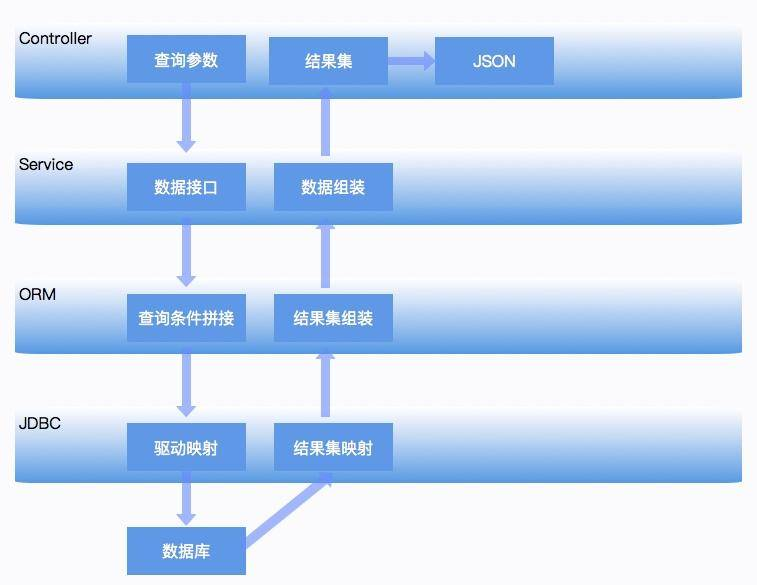
拿一个最简单的 Spring Boot 应用来说，请求会通过 Controller 层来接收数据，然后 Service 层会进行一些逻辑的封装，数据通过 Dao 层的 ORM 比如 JPA 或者 MyBatis 等，来调用底层的 JDBC 接口进行实际的数据获取。通常情况下，JVM 对这种数据获取方式，表现都是非常温和的。我们挨个看一下每一层可能出现的一些不正常的内存使用问题（仅限 JVM 相关问题），以便对平常工作中的性能分析和性能优化有一个整体的思路。
首先，我们提到一种可能，那就是类似于 Fastjson 工具所产生的 bug，这类问题只能通过升级依赖的包来解决，属于一种极端案例。具体可参考这里
Controller 层
Controller 层用于接收前端查询参数，然后构造查询结果。现在很多项目都采用前后端分离架构，所以 Controller 层的方法，一般使用 @ResponseBody 注解，把查询的结果，解析成 JSON 数据返回。
这在数据集非常大的情况下，会占用很多内存资源。假如结果集在解析成 JSON 之前，占用的内存是 10MB，那么在解析过程中，有可能会使用 20M 或者更多的内存去做这个工作。如果结果集有非常深的嵌套层次，或者引用了另外一个占用内存很大，且对于本次请求无意义的对象（比如非常大的 byte[] 对象），那这些序列化工具会让问题变得更加严重。
因此，对于一般的服务，保持结果集的精简，是非常有必要的，这也是 DTO（Data Transfer Object）存在的必要。如果你的项目，返回的结果结构比较复杂，对结果集进行一次转换是非常有必要的。互联网环境不怕小结果集的高并发请求，却非常恐惧大结果集的耗时请求，这是其中一方面的原因。
Service 层
Service 层用于处理具体的业务，更加贴合业务的功能需求。一个 Service，可能会被多个 Controller 层所使用，也可能会使用多个 dao 结构的查询结果进行计算、拼装。
Service 的问题主要是对底层资源的不合理使用。举个例子，有一回在一次代码 review 中，发现了下面让人无语的逻辑：
//错误代码示例
int getUserSize() {
List<User> users = dao.getAllUser();
return null == users ? 0 : users.size();
}
这种代码，其实在一些现存的项目里大量存在，只不过由于项目规模和工期的原因，被隐藏了起来，成为内存问题的定时炸弹。
Service 层的另外一个问题就是，职责不清、代码混乱，以至于在发生故障的时候，让人无从下手。这种情况就更加常见了，比如使用了 Map 作为函数的入参，或者把多个接口的请求返回放在一个 Java 类中。
//错误代码示例
Object exec(Map<String,Object> params){
String q = getString(params,"q");
if(q.equals("insertToa")){
String q1 = getString(params,"q1");
String q2 = getString(params,"q2");
//do A
}else if(q.equals("getResources")){
String q3 = getString(params,"q3");
//do B
}
...
return null;
}
这种代码使用了万能参数和万能返回值，exec 函数会被几十个上百个接口调用，进行逻辑的分发。这种将逻辑揉在一起的代码块，当发生问题时，即使使用了 Jstack，也无法发现具体的调用关系，在平常的开发中，应该严格禁止。
ORM 层
ORM 层可能是发生内存问题最多的地方，除了本课时开始提到的 SQL 拼接问题，大多数是由于对这些 ORM 工具使用不当而引起的。
举个例子，在 JPA 中，如果加了一对多或者多对多的映射关系，而又没有开启懒加载、级联查询的时候就容易造成深层次的检索，内存的开销就超出了我们的期望，造成过度使用。
另外，JPA 可以通过使用缓存来减少 SQL 的查询，它默认开启了一级缓存，也就是 EntityManager 层的缓存（会话或事务缓存），如果你的事务非常的大，它会缓存很多不需要的数据；JPA 还可以通过一定的配置来完成二级缓存，也就是全局缓存，造成更多的内存占用。
一般，项目中用到缓存的地方，要特别小心。除了容易造成数据不一致之外，对堆内内存的使用也要格外关注。如果使用量过多，很容易造成频繁 GC，甚至内存溢出。
JPA 比起 MyBatis 等 ORM 拥有更多的特性，看起来容易使用，但精通门槛却比较高。
这并不代表 MyBatis 就没有内存问题，在这些 ORM 框架之中，存在着非常多的类型转换、数据拷贝。
举个例子，有一个批量导入服务，在 MyBatis 执行批量插入的时候，竟然产生了内存溢出，按道理这种插入操作是不会引起额外内存占用的，最后通过源码追踪到了问题。
这是因为 MyBatis 循环处理 batch 的时候，操作对象是数组，而我们在接口定义的时候，使用的是 List；当传入一个非常大的 List 时，它需要调用 List 的 toArray 方法将列表转换成数组（浅拷贝）；在最后的拼装阶段，使用了 StringBuilder 来拼接最终的 SQL，所以实际使用的内存要比 List 多很多。
事实证明，不论是插入操作还是查询动作，只要涉及的数据集非常大，就容易出现问题。由于项目中众多框架的引入，想要分析这些具体的内存占用，就变得非常困难。保持小批量操作和结果集的干净，是一个非常好的习惯。
分库分表内存溢出
分库分表组件
如果数据库的记录非常多，达到千万或者亿级别，对于一个传统的 RDBMS 来说，最通用的解决方式就是分库分表。这也是海量数据的互联网公司必须面临的一个问题。
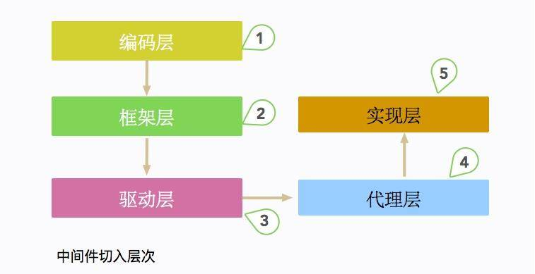
根据切入的层次，数据库中间件一般分为编码层、框架层、驱动层、代理层、实现层 5 大类。典型的框架有驱动层的 sharding-jdbc 和代理层的 MyCat。
MyCat 是一个独立部署的 Java 服务，它模拟了一个 MySQL 进行请求的处理，对于应用来说使用是透明的。而 sharding-jdbc 实际上是一个数据库驱动，或者说是一个 DataSource，它是作为 jar 包直接嵌入在客户端应用的，所以它的行为会直接影响到主应用。
这里所要说的分库分表组件，就是 sharding-jdbc。不管是普通 Spring 环境，还是 Spring Boot 环境，经过一系列配置之后，我们都可以像下面这种方式来使用 sharding-jdbc，应用层并不知晓底层实现的细节：
@Autowired
private DataSource dataSource;
我们有一个线上订单应用，由于数据量过多的原因，进行了分库分表。但是在某些条件下，却经常发生内存溢出。
分库分表的内存溢出
一个最典型的内存溢出场景，就是在订单查询中使用了深分页，并且在查询的时候没有使用“切分键”。使用前面介绍的一些工具，比如 MAT、Jstack，最终追踪到是由于 sharding-jdbc 内部实现所引起的。
这个过程也是比较好理解的，如图所示，订单数据被存放在两个库中。如果没有提供切分键，查询语句就会被分发到所有的数据库中，这里的查询语句是 limit 10、offset 1000，最终结果只需要返回 10 条记录，但是数据库中间件要完成这种计算，则需要 (1000+10)*2=2020 条记录来完成这个计算过程。如果 offset 的值过大，使用的内存就会暴涨。虽然 sharding-jdbc 使用归并算法进行了一些优化，但在实际场景中，深分页仍然引起了内存和性能问题。
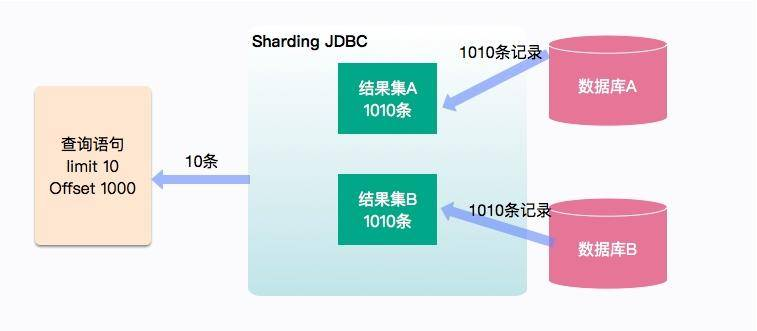
下面这一句简单的 SQL 语句，会产生严重的后果：
select * from order order by updateTime desc limit 10 offset 10000
这种在中间节点进行归并聚合的操作，在分布式框架中非常常见。比如在 ElasticSearch 中，就存在相似的数据获取逻辑，不加限制的深分页，同样会造成 ES 的内存问题。
另外一种情况，就是我们在进行一些复杂查询的时候，发现分页失效了，每次都是取出全部的数据。最后根据 Jstack，定位到具体的执行逻辑，发现分页被重写了。
private void appendLimitRowCount(final SQLBuilder sqlBuilder, final RowCountToken rowCountToken, final int count, final List<SQLToken> sqlTokens, final boolean isRewrite) {
SelectStatement selectStatement = (SelectStatement) sqlStatement;
Limit limit = selectStatement.getLimit();
if (!isRewrite) {
sqlBuilder.appendLiterals(String.valueOf(rowCountToken.getRowCount()));
} else if ((!selectStatement.getGroupByItems().isEmpty() || !selectStatement.getAggregationSelectItems().isEmpty()) && !selectStatement.isSameGroupByAndOrderByItems()) {
sqlBuilder.appendLiterals(String.valueOf(Integer.MAX_VALUE));
} else {
sqlBuilder.appendLiterals(String.valueOf(limit.isNeedRewriteRowCount() ? rowCountToken.getRowCount() + limit.getOffsetValue() : rowCountToken.getRowCount()));
}
int beginPosition = rowCountToken.getBeginPosition() + String.valueOf(rowCountToken.getRowCount()).length();
appendRest(sqlBuilder, count, sqlTokens, beginPosition);
}
如上代码，在进入一些复杂的条件判断时（参照 SQLRewriteEngine.java），分页被重置为 Integer.MAX_VALUE。
总结
本课时以 Spring Boot 项目常见的分层结构，介绍了每一层可能会引起的内存问题，我们把结论归结为一点，那就是保持输入集或者结果集的简洁。一次性获取非常多的数据，会让中间过程变得非常不可控。最后，我们分析了一个驱动层的数据库中间件，以及对内存使用的一些问题。
很多程序员把这些耗时又耗内存的操作，写了非常复杂的 SQL 语句，然后扔给最底层的数据库去解决，这种情况大多数认为换汤不换药，不过是把具体的问题冲突，转移到另一个场景而已。img](assets/Cgq2xl5YswOALstRAAKRsvw-7ZU685.jpg)
小结
本课时主要介绍了一个处处有问题的报表系统，并逐步解决了它的 OOM 问题，同时定位到了拒绝服务的原因。
在研发资源不足的时候，我们简单粗暴的进行了硬件升级，并切换到了更加优秀的 G1 垃圾回收器，还通过代码手段进行了问题的根本解决：
- 缩减查询的字段，减少常驻内存的数据；
- 去掉不必要的、命中率低的堆内缓存，改为分布式缓存；
- 从产品层面限制了单次请求对内存的无限制使用。
在这个过程中，使用 MAT 分析堆数据进行问题代码定位，帮了大忙。代码优化的手段是最有效的，改造完毕后，可以节省更多的硬件资源。事实上，使用了 G1 垃圾回收器之后，那些乱七八糟的调优参数越来越少用了。
接下来，我们使用 jstack 分析了一个出现频率非常非常高的问题，主要是不同速度的接口在同一应用中的资源竞争问题，我们发现一些成熟的微服务框架，都会对这些资源进行限制和隔离。
最后，以 4 个简单的示例，展示了 jstack 输出内容的一些意义。代码都在 git 仓库里，你可以实际操作一下，希望对你有所帮助。